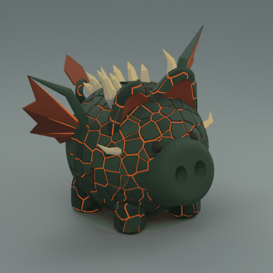
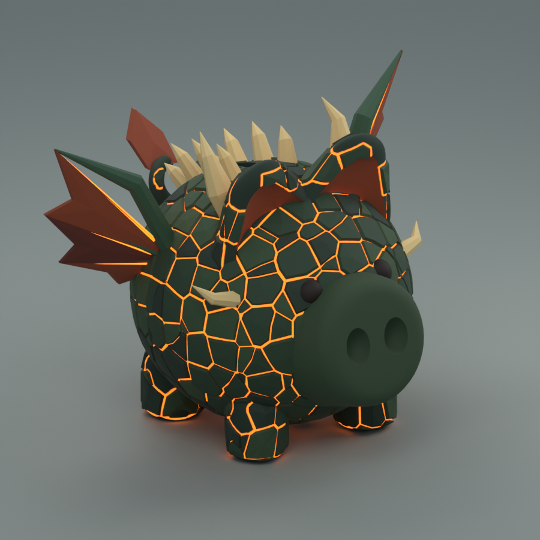
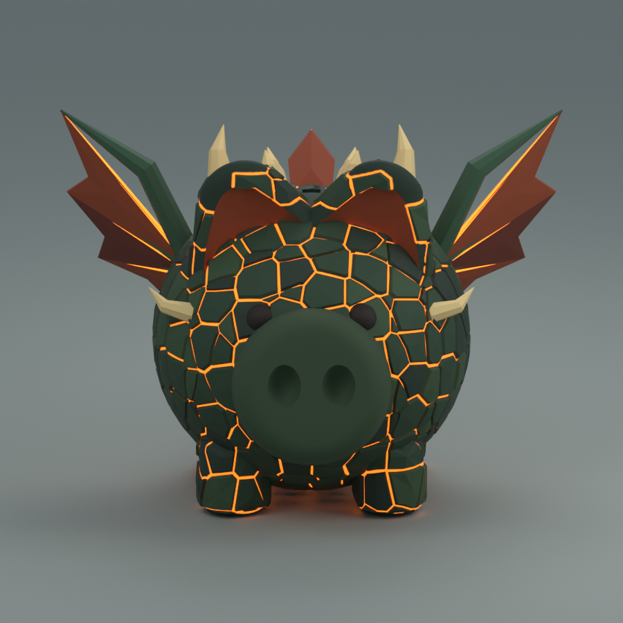
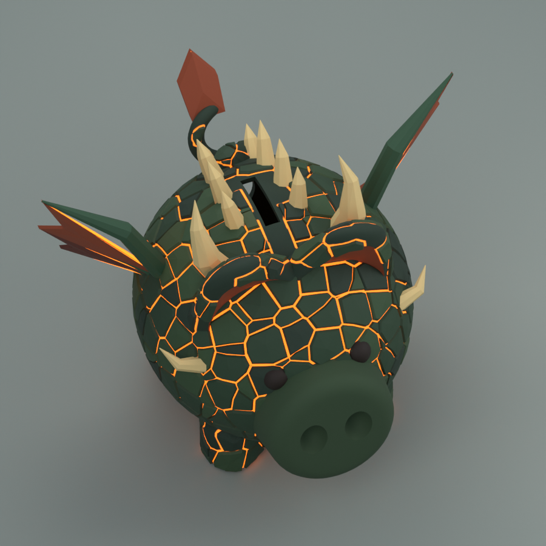
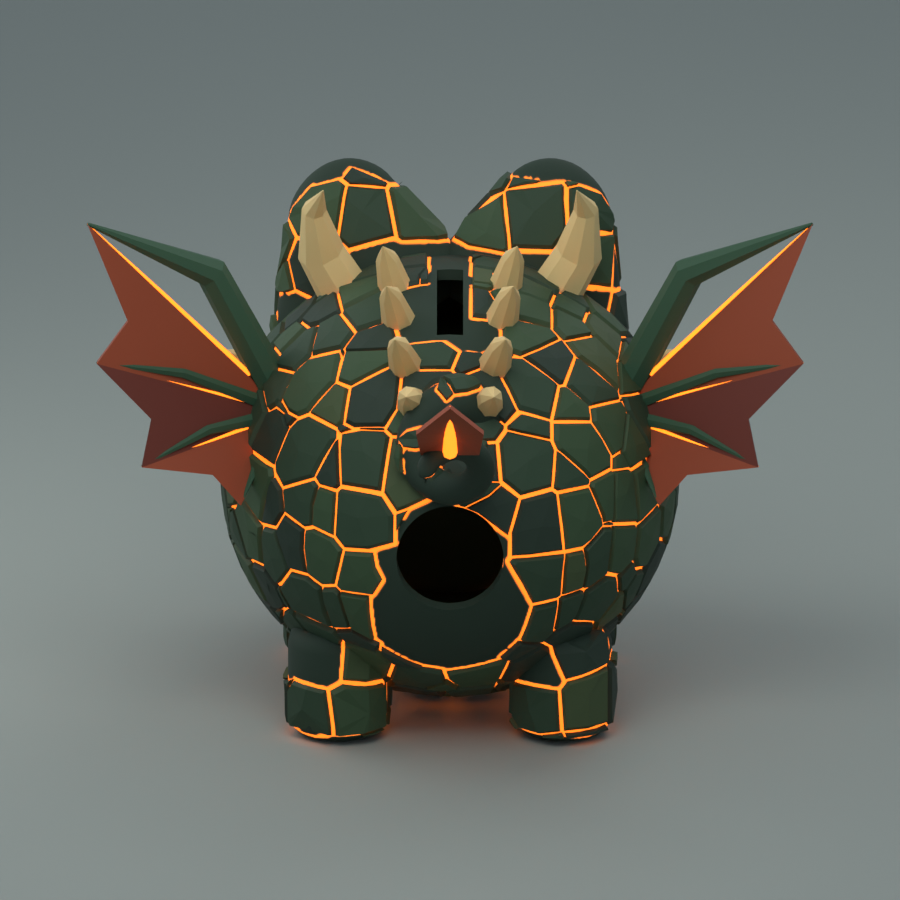
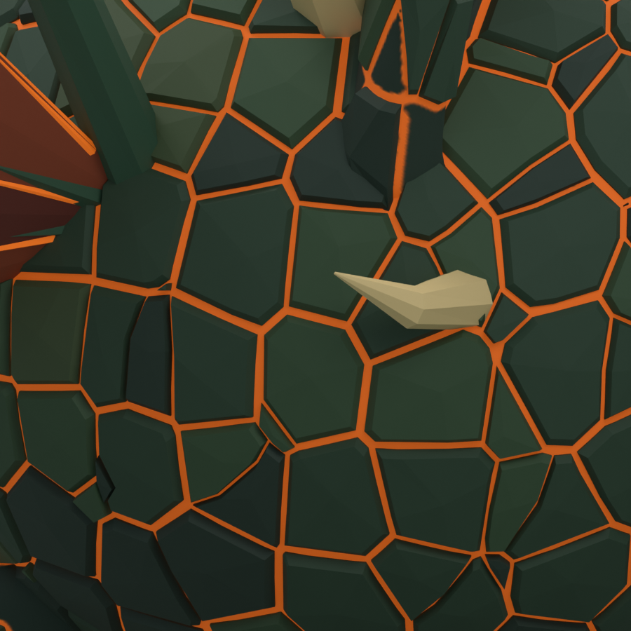

ANIMAL LEGENDARY · RAISED-SCALE REVISION
Dragon
453 real beveled scales sit slightly above the skin. Continuous ember seams breathe across the coat, with a gentle wing-and-tail idle.
Actual animation

24 meshes · 40,426 triangles · Studio integration pending
Model views




